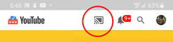

This lets you load youtube.com/tv so you can remote control YouTube from your phone or other mobile device.
To use:
- Open youtube.com/tv and click the Settings icon, then "link with TV code" and it'll show you a code.
- Open the YouTube app on your phone and go to Settings > Watch on TV > Enter TV Code and enter that code and press the "link" button.
- Or in theory, if you're on the same wifi network, you can simply open the YouTube app on your phone and have the cast icon appear even without manually linking, but that doesn't seem to work as reliably.

After linking, whatever you play in the YouTube app on your phone will play in the YouTube window on your laptop or desktop. Whoo hoo!
To stop casting, click the Cast icon again and choose "disconnect".
Troubleshooting: if it doesn't work or stops working: in the youtube.com/tv browser window go to Settings > Linked Devices and click "unlink all devices". And on your mobile device kill and relaunch the YouTube app and repeat the steps above.